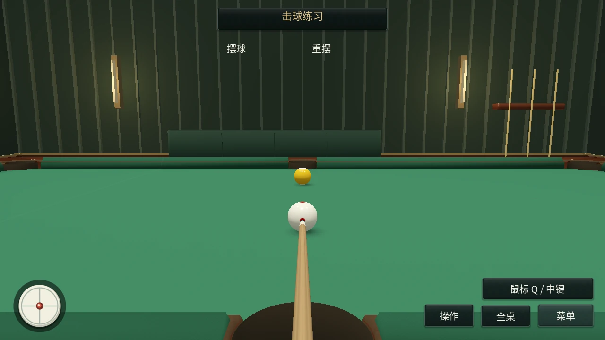

公开试玩
离线版本，免登录。
人机对战
三档 AI，可在局中切换，保留当前球局与比分。
击球练习
中袋直球、底袋切球和贴库长球，支持自定义摆球。停球后按 R 重摆。
完整版
完整版在试玩内容之外提供联机对战、对局恢复与在线战绩。
联机对战
预建账号登录后可见四张球桌；通过桌卡入座或邀请，双方准备后开局。
对局恢复
断线后保留座位两分钟，球继续运行；重新登录可申请接回原局与比分。
在线战绩
仅统计双方登录的联机对局，每局记录一次；练习与人机不计入。
球房与聊天
三套球房风格、菜单音乐；对局内聊天，新消息仅提示，不自动弹出。
完整版不公开下载，不提供公开匹配、注册或排位。

操作
- 2D 全桌
- 鼠标瞄准，左键后拉、松开出杆。单击锁定方向后用滚轮微调。
- 3D 第一人称
- 点击球桌锁定鼠标。按住 Ctrl 后拉、前送出杆，按 Esc 释放鼠标。